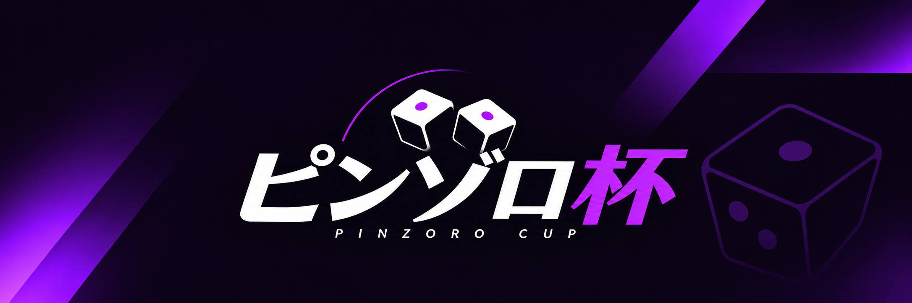
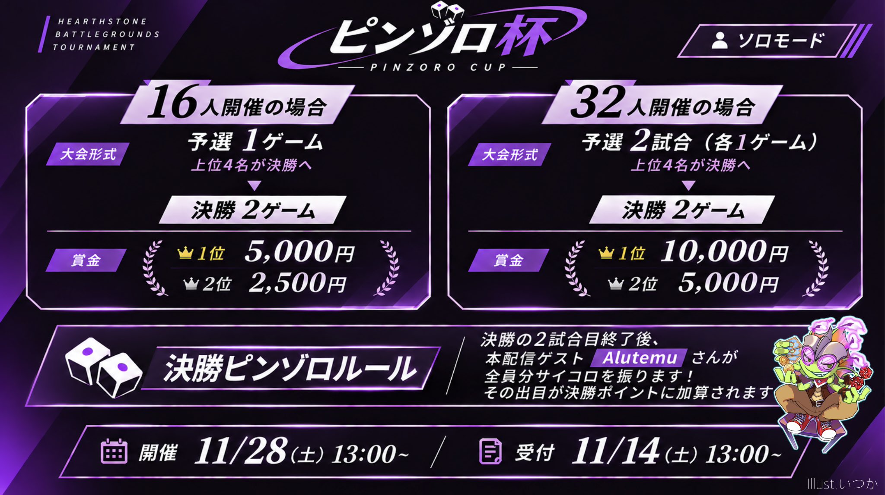
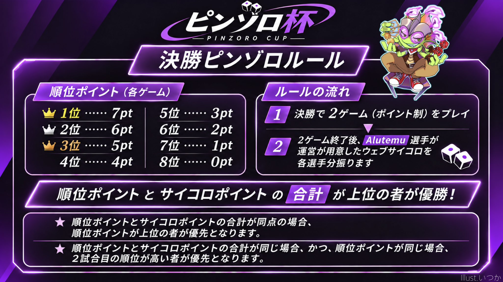

ピンゾロ杯
大会概要
大会ルールと賞金
16人開催の場合
- 予選は1ゲーム。上位4名が決勝へ進出します。
- 決勝は2ゲーム。
- 賞金：1位 5,000円 / 2位 2,500円
32人開催の場合
- 予選は2試合（各1ゲーム）。上位4名が決勝へ進出します。
- 決勝は2ゲーム。
- 賞金：1位 10,000円 / 2位 5,000円
決勝ピンゾロルール
- 決勝で2ゲームを行い、順位ポイントを獲得します。
- 2ゲーム終了後、本配信ゲストのAlutemu選手が、運営が用意したウェブサイコロを各選手分振ります。
- サイコロの出目を決勝ポイントに加算し、順位ポイントとサイコロポイントの合計で優勝者を決定します。
各ゲームの順位ポイント：1位 7pt / 2位 6pt / 3位 5pt / 4位 4pt / 5位 3pt / 6位 2pt / 7位 1pt / 8位 0pt
同点時の順位決定
- 合計ポイントが同じ場合は、順位ポイントが高い選手を優先します。
- 順位ポイントも同じ場合は、決勝2試合目の順位が高い選手を優先します。
大会フライヤー

